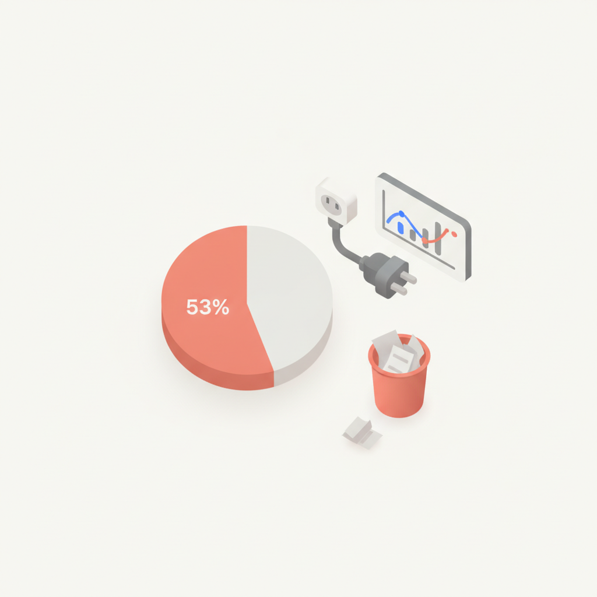
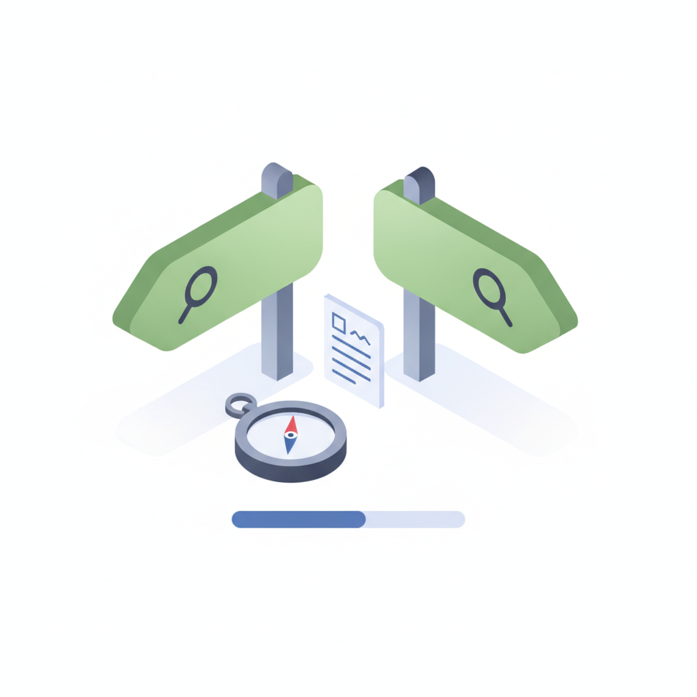
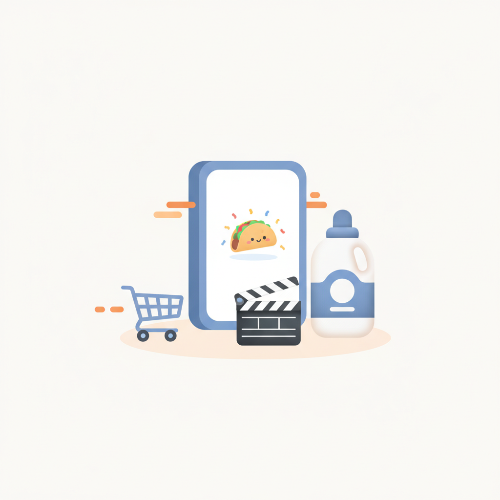
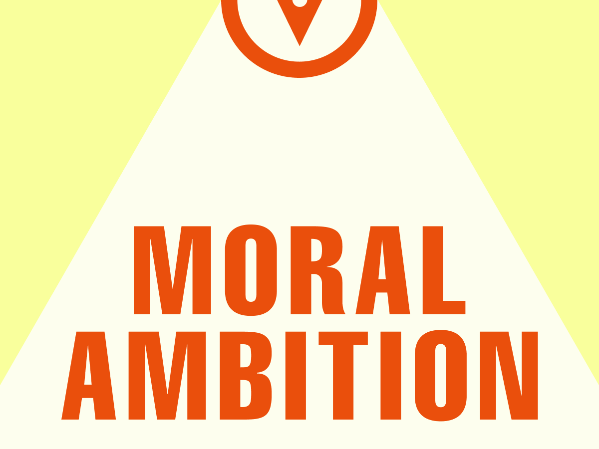

안녕하세요! 월요일 마케팅 소식 전해드립니다 😊 오늘은 AI가 마케팅 현장을 얼마나 빠르게 바꾸고 있는지 확인할 수 있는 소식들이 많습니다. WARC·PHD 보고서에 따르면 AI 에이전트가 관여하는 전 세계 소비지출이 2030년 3조3,500억 달러에 달할 것으로 전망됩니다. 소비 의사결정 자체에 AI가 직접 개입하는 시대가 생각보다 훨씬 빨리 다가오고 있다는 뜻입니다.
한편 소셜미디어 긴 글의 4분의 1이 AI 작성이라는 분석 결과도 흥미롭습니다. 특히 LinkedIn에서 그 비중이 가장 높게 나타났는데, 콘텐츠 생산 속도는 높아진 반면 '사람의 목소리'가 점점 희귀해지고 있다는 역설이 담겨 있습니다. 이와 맞물려 리센느가 K팝 아이돌 협찬 캠페인에서 광고 대신 자발적 콘텐츠를 이끌어낸 사례는, 진정성 있는 접점이 여전히 강력한 도구임을 보여줍니다.
롱블랙에서는 '모럴 앰비션' 아티클을 통해 내가 하는 일의 의미를 다시 짚어보는 질문을 던지고 있습니다. 바쁜 한 주를 시작하는 아침, 잠깐 방향을 점검해보는 시간도 좋을 것 같습니다. 이번 한 주도 좋은 인사이트 가득한 시간 되시길 바랍니다! 🚀
WARC와 PHD가 공동 발표한 보고서에 따르면, AI 에이전트가 관여하는 전 세계 소비지출이 2026년 9,440억 달러에서 2030년 3조3,500억 달러로 약 3.5배 증가할 전망이다. 소비자가 구매 결정을 AI에 위임하는 '에이전틱 소비' 시대가 빠르게 도래하고 있음을 의미한다. 마케터는 사람이 아닌 AI 에이전트를 설득하는 새로운 마케팅 패러다임에 대비해야 한다.
› 2AI 검색 요약 확산으로 검색 광고 매출이 줄 것이라는 우려와 달리, 구글의 검색 광고 매출은 오히려 우상향하고 있다. 구글 경영진은 AI가 길어진 검색 쿼리에서 맥락을 깊이 이해해 적재적소에 광고를 노출하고 지면도 다양한 서비스로 확장되고 있다고 설명한다. 제로클릭 증가가 곧 광고 효과 감소로 직결되지 않는다는 점에서 검색 광고 전략 재검토가 필요하다.
›
3애드버리티 보고서에 따르면 마케터 53%가 데이터에서 얻은 인사이트를 실제 캠페인 개선으로 연결하지 못하고 있으며, AI 도입은 빠르나 성과 낮은 캠페인에 대한 대응은 여전히 느려 광고 예산이 낭비되고 있다. AI에 대한 신뢰 부족과 비즈니스 맥락 부재가 데이터 기반 의사결정을 가로막는 핵심 요인으로 지목됐다. 단순한 AI 도입을 넘어 데이터-인사이트-실행을 연결하는 운영 체계 구축이 시급하다.
›
4가트너는 생성형 AI 확산으로 2026년까지 기존 검색엔진 검색량이 25% 감소할 것으로 예측했으며, 구글 'AI 개요'와 네이버 'AI 브리핑' 등의 확산으로 제로클릭 비중이 이미 60%를 넘어섰다. 이에 따라 GEO(생성형 엔진 최적화) 대행 서비스가 급증하며 마케팅 업계의 새로운 화두로 떠올랐다. 마케터는 불안을 조장하는 GEO 영업에 휩쓸리지 않고 자사 브랜드에 맞는 콘텐츠 전략을 주체적으로 판단해야 한다.
› 5AI 탐지 기업 팽그램이 100만여 건의 소셜미디어 게시물을 분석한 결과, 긴 글일수록 AI 작성 비중이 높았으며 링크드인이 주요 플랫폼 중 AI 콘텐츠 비중이 가장 높은 것으로 나타났다. AI 생성 콘텐츠가 소셜미디어를 빠르게 잠식하면서 콘텐츠의 진정성과 신뢰도가 새로운 경쟁 요소로 부상하고 있다. 브랜드와 마케터는 AI 활용과 함께 인간적 목소리를 담은 진성 콘텐츠 전략을 병행할 필요가 있다.
›
6미국 유통기업 앨버트슨스가 P&G와 협력해 편당 3분 이내의 숏폼 시리즈 '리코스 타코스' 22편을 제작하고 매장 내 디지털 스크린, 이커머스 플랫폼, 소셜미디어 등에 배포했다. 리테일 미디어가 단순 광고 채널을 넘어 브랜드 콘텐츠를 유통하는 플랫폼으로 진화하고 있음을 보여주는 사례다. 국내 마케터도 리테일 미디어를 광고 지면이 아닌 콘텐츠 유통 채널로 재정의하는 전략을 검토할 시점이다.
› 7더쇼 생방송 당일 음악 방송 일정을 소화하는 K팝 아이돌에게 신상 아이템을 증정하는 방식으로 진행된 협찬 캠페인에서, 아이돌들이 자발적으로 제품을 소개하는 콘텐츠가 자연스럽게 생성됐다. 일방적 광고 협찬이 아닌 아티스트의 진심 어린 반응을 이끌어내는 방식이 팬덤 기반 바이럴 콘텐츠로 이어졌다. 팬덤 문화를 활용할 때는 강요보다 진정성 있는 경험 설계가 콘텐츠 확산에 더 효과적임을 보여주는 사례다.
›
휴가철이 되면 제가 한 번쯤 하는 고민이 있습니다. ‘내가 하는 일이 세상에 쓸모 있을까?’ 물론 일과 잠시 멀어진 덕에 하는 생각이기도 해요.
아티클 읽기 →브랜드 진단부터 지금 당장 해야 할 우선순위까지,
30분 무료 상담에서 함께 정리해드려요.
이미 수십 개 브랜드가 상담받았습니다.
내 브랜드처럼, 함께 고민하는 팀원의 마음으로 봅니다.
스타트업 대표·마케팅 담당자를 위한 30분